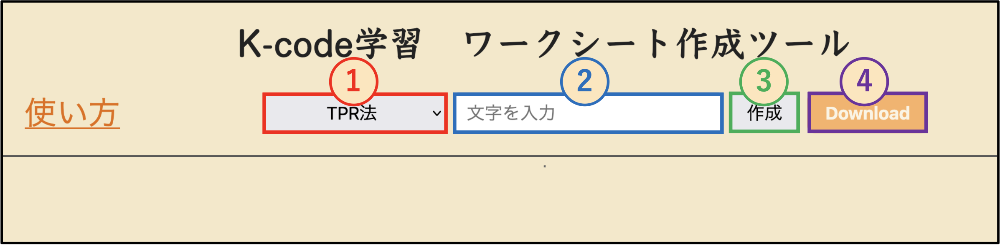

① K-codeの表現方法を選びます
「TPR法」または「アルファベット法」を選択してください。
② 学習したい文字を入力します
カタカナや漢字を入力してください。ひらがなは、自動的にカタカナに変換されます。
③ 「作成」ボタンを押します
入力した文字のワークシートが表示されます。文字や表現方法を変更した場合は、もう一度「作成」を押してください。
※対応していない文字は、ワークシートの上に赤文字で表示されます。その文字の練習欄は作成されず、印刷・PDFにも含まれません。
④ 「Download」ボタンを押します
印刷画面が開きます。PDFとして保存する場合は、出力先で「PDFに保存」などを選択してください。そのまま印刷することもできます。